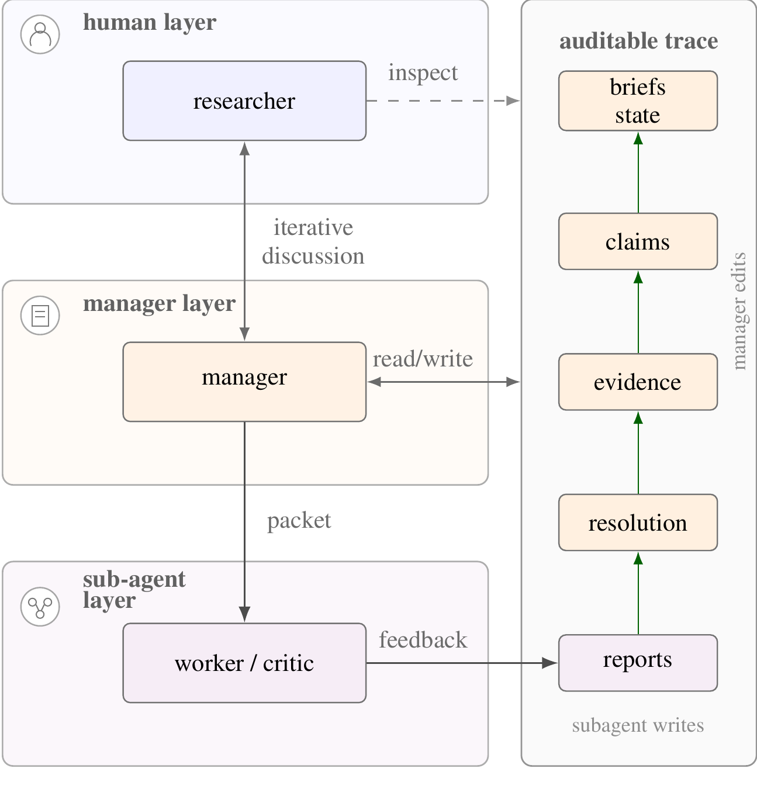

|
Atelier: A Human-Owned Protocol for Auditable AI-Assisted Research TL;DR: Atelier is a project-local, file-backed protocol for AI-assisted research. It keeps the researcher in charge, routes agent work through manager, worker, and critic roles, and turns agent activity into auditable evidence-backed claims. |
|
 Layered protocol overview from the paper: the researcher steers, the manager resolves work, sub-agents operate in scoped packets, and the audit trace records reports, resolutions, evidence, claims, and briefs. |
AI assistants can now propose experiments, draft code, summarize literature, and turn open-ended prompts into confident research-shaped artifacts. Atelier asks a different question: can the loop that produced those artifacts be trusted as a research argument?
The system targets the protocol layer between freeform prompting and fully autonomous research agents. A project is organized through durable files that separate researcher intent, agent reports, manager resolutions, evidence records, and accepted claims. The result is a reconstructible chain from vague intent to scoped work, critique, evidence, and claim updates.
The paper frames two common failure modes in AI-assisted research. First, a loop can become post-hoc optimization: try many ideas, keep the one that scores well, then write a story around the metric. Second, a loop can become brittle: hallucinated sources, drifted scope, or weak derivations pass through because reports, observations, and accepted evidence are not separated.
Atelier addresses those failures by making the research chain explicit. Metrics are treated as evidence inside a broader argument, the researcher keeps authority over claims, and agent autonomy is bounded by scoped packets and recorded review.
Atelier starts where research often starts, with a vague idea. Orientation turns that idea into a working problem statement, evaluation criteria, assumptions, a source map, and a next move. Later phases cover problem framing, related-work mapping, evaluation design, method development, experiment planning, evidence evaluation, claim update, and deliverable packaging.
The lifecycle is deliberately looped rather than linear. New evidence, source checks, or critic findings can send the project back to an earlier phase. This keeps metrics and experiments inside a broader research argument instead of letting a project optimize for a result and write the story afterward.
Freeform AI-assisted research can let activity outpace evidence. Atelier is designed to keep the chain visible: what was asked, what was observed, what was accepted, and what remains uncertain.
The goal is not to replace the researcher with an autonomous scientist. The goal is to make AI-assisted research work more inspectable, recoverable, and reviewable while preserving human authority over the project.
A pilot study compares Atelier with a freeform agent baseline on a simulated early-stage research task. Both conditions receive the same multi-turn user interaction around a NeuroGolf 2026 research direction. The baseline writes a final research plan from the conversation, while Atelier runs either orientation alone or the full manager-worker-critic lifecycle.
Outputs are scored on 20-point rubrics covering problem framing, constraint capture, evaluation design, recoverability, and related dimensions. In the orientation sweep, the mean score rises from 16.25 to 19.5 out of 20. In the lifecycle sweep, the mean score rises from 16.5 to 19.25 out of 20. The gains hold across four model and effort settings.
| Setting | Baseline | Atelier | Gain |
|---|---|---|---|
| Orientation sweep (/20) | |||
| GPT-5.2, medium | 15 | 19 | +4 |
| GPT-5.4-Mini, medium | 15 | 19 | +4 |
| GPT-5.5, low | 17 | 20 | +3 |
| GPT-5.5, medium | 18 | 20 | +2 |
| Mean across four settings | 16.25 | 19.5 | +3.25 |
| Lifecycle sweep (/20) | |||
| GPT-5.2, medium | 16 | 19 | +3 |
| GPT-5.4-Mini, medium | 18 | 20 | +2 |
| GPT-5.5, low | 16 | 18 | +2 |
| GPT-5.5, medium | 16 | 20 | +4 |
| Mean across four settings | 16.5 | 19.25 | +2.75 |
Pilot study results from the paper.
The lifecycle runs also produce canonical state, briefs, packets, reports, and resolutions, while the baseline produces only a transcript and final plan. This makes each claim easier to inspect and allows later agents to resume from project state without replaying the original conversation.
Atelier is an early protocol study rather than a claim that AI systems can replace researchers. The current evaluation is small, manually scored, and based on a simulated research scenario. The next step is broader validation with blind scoring, comparisons against alternative agent stacks, and full-scale research projects with externally verifiable outcomes.
Questions? Email yg534@cornell.edu.